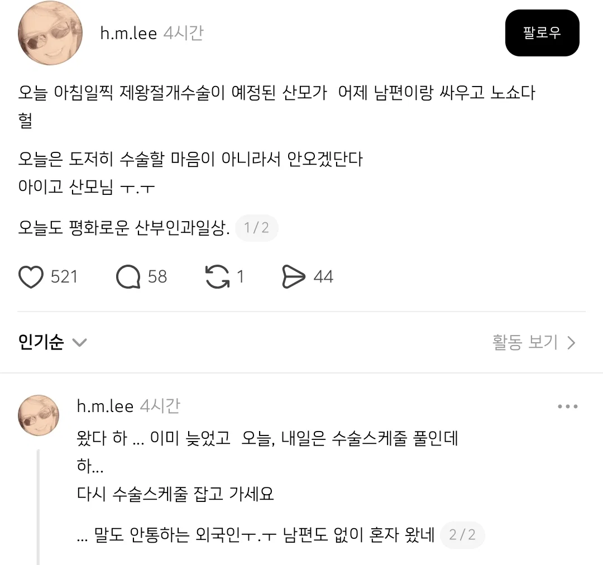

제왕절개 수술 노쇼해버렸다는 산모...jpg
댓글
지 손해지뭐
아기가 부모가챠 존나실패했네....
모르는 야들아 나중에 피와 살이 되는 내용이다
보통 36주 정도 되면 의사가 슬슬 분만 방법을 선택하라고 한다.
자연분만 하겠다고 하고 양수/진통이 와서 자연분만 할때 제왕은 정말정말정말 응급 아니면 못함. 본문에 나왔듯이 제왕은 미리 다 예약을 잡아서 수술방+의사들 대부분 풀타임이라 임산부가 자연분만 들어가면 생명이 존나게 위중한거 아님 제왕 안해줌.
우리 마누라랑 난 그걸 몰랐다가
마누라가 4.16키로를 생으로 자연분만함.....
아니 걍 3.8이라매요...머리가 작아서 가능하다매
나도 몰라서 날 안잡고 어버버 고민하다가 양수 터져서 자연분만 했는데 새벽에 분만실 들어가서 밤 12 직전에 나옴ㅋㅋㅋㅋ 와이프는 기억 안난다고 하는데 난 아직도 상상만 해도 공포임
요새 4키로면... 임신기에 드시고 싶으신거 거의 그대로 다 드신듯? 과일같은거?
장군되겠네 ㄷㄷ
그래? 주변에 자연선택했다 제왕들간사람이 3명이나있는데 그중하나가 친누나인데
17시간고통받다 낳긴함ㅋㅋ
그래서 우리와이프는 걍 바로 제왕함
미친년ㅋㅋ
만삭인 마누라랑 싸우는놈이나
그걸 기분나쁘다고 노쇼하는 철부지년이나
애 키우면서 꼭 어른도 같이 되써 애기 고생안하기만 빈다
근데 와이프 분만 하는데
옆에서 폰으로
빨리 나와라요~ 나와라 요놈아요~ 나와라 이제~ 제발 제발 나와라~
노래 틀어주면 어케됨?
평생 와이프한테 쿠사리 먹음
무덤 비석까지 욕이 써지고 싶은가보네
힘 줘야 하는데 웃기면 어쩌라는거임
정 존나떨어져서
낳는거 참고 이혼부터할듯
제왕절개는 원래 노쇼 가능하지, 그렇게 계속 노쇼하다가 진통오면 자연분만 하고 자연분만 하다 도저히 안되면 응급제왕하고 그런거지, 제왕절개 수술 시간 30분 정도 밖에 안돼서 하려면 당일에도 함
노쇼(No-Show)란 예약을 해놓고 취소한다는 연락 없이 예약 장소에 나타나지 않는 '예약 부도' 행위를 뜻합니다.
노쇼가 원래가능하다고?
여자들이 얼마나 개 병신년이고 이 사회가 얼마나 여자를 개병신년으로 만든지 알수있는부분이네
개죶병신년들 데리고 결혼하려는 한남들 불쌍해 ㅋㅋ
ㄹㅇ ㅅㅂ ㅋㅋㅋ 내 눈을 의심했네
대한민국에 진상들 존나 많다 진짜
게다가 부끄러운 줄도 모르고 당당하네 참나 ㅋㅋㅋ

생각보다 흔해, 이게 그냥 무슨 보톡스 예약 그런게 아니라 암튼 수술이라
사전처치는 조상님이 해주시나요 대학병원 조차 하루 전 입원 시키는데, 당일 30분???
그런거 안된 상태로도 낳는게 ‘응급제왕‘ 이라니까
계속 노쇼하다가 ㅇㅈㄹ ㅋㅋㅋㅋㅋㅌ 남의 시간을 예약해놓는다는 행위가 조스로 보이나
아니 누가 내가 하고 내 와이프가 한댔나.. 그냥 저런 사람도 있더라 하고 한말임
엥 그래도 수술인데 그 시간에 예약잡혀서
다른 환자 안잡고 병원 스케쥴 비워놓은건데 뭐가 가능함??
노쇼한애 때문에 빠그라진 병원 비용은 물어줄거임?
그 시간에 하고싶었던 다른 환자도 물어줄거임?
가능은 말 그대로 가능 하다는 거임 해야만 한다는게 아니고
그려 뭐든 다 노쇼할 수 있지
화장터도 노쇼할 수 있다
아니 니가 말하는 '가능하다'는 '그런 일이 발생할 수 있다'의 의미로 쓴거 같은데
노쇼는 '능력껏 할 수 있는 게(할 수 있다 가, 능하다 능)' 아니야.
흡연충이 실내 흡연하는 것도 '그런 일이 벌어질 수는 있음'이지
그게 '가능한것'은 아님
일단 우리 와이프가 최근에 출산했고, 우리 와이프가 그랬단건 당연히 아니지만 출산과정 보면서 옆에 다른 산모들 케이스도 몇몇 봐보니까 실제로 그런걸 뭐 어캄 내가 워딩이 잘못된거면 알겠고, 빈번하다고
근데 니가 하려던 말이 뭔지는 알겠어 ㅋㅋㅋ
나도 곧인데 덕분에 간접경험 하나 얻어간다
아빠되면 어떤기분이려나
이게 사람마다 물론 다르겠지만 살면서 처음 느껴보는 기분이었음, 되게 복합적인데 '이게 내 아이라니', '이 아이가 나 없으면 삶을 유지할 수 없겠구나', '내가 지켜야만 한다', '어쩜 이렇게 작고 미약하면서도 힘이 넘칠까' 등등등
하아아 결코 형언할수 없는 감정이겠구나
파이팅이야!
근데 가능하다는게 뭐 다른 의미가 아니라 진짜 출산이란게 예측대로만 흘러가 주면 좋은데 낳고 싶은 날에 낳을 수 있으면 다행인데 너무 여러 변수가 있어서 일찍 나올 수도 있고 산모가 겁먹어서 미룰 때도 있고 암튼 그래, 이게 막 그렇게 그냥 약속이니까 무조건 지켜야 한다 이런게 아니라 자연분만도 존나 위험하고 힘들고 제왕절개도 원하는 대로 안흘러갈 수 있고 자연분만 한다고 했다가 안한다 했다가 산모 심경계속 바뀌고
알아 뭔지
불가항력인 무언가가 있을수 있고 꽤 빈번하다는거자너
적극적으로 노쇼를 하려고 하는게 아니라
어쩌다보니 노쇼가 되는 경우가 있다는거니까
글만 봐도 깝깝하네
저게 왜 저런지 앎?
그냥 에미가 뒈져서 저럼
유년기까지 에미가 살아있으면 절대 저럴 수가 없음
결국 고통은 자기가 받을텐데 왜 .....
흡 하고 참아졌나
수술 스케줄 다시 잡으려면 이것저것 걸리고 귀찮지 않나